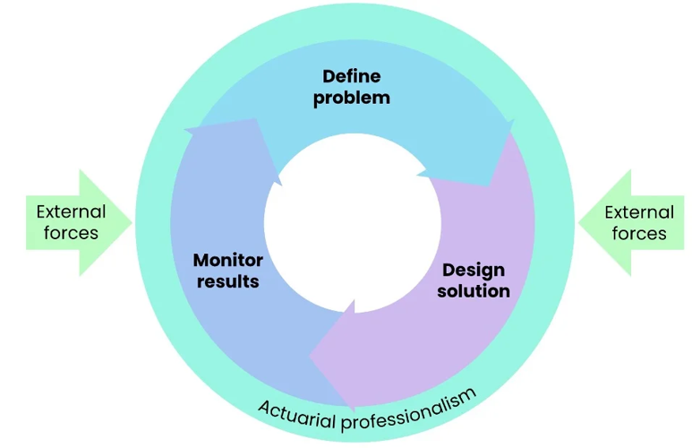

Lecture: Introduction to Actuarial Data Science
Actuarial Data Science - Open Learning Resource

Dr. Fei Huang
Lecturer-in-charge
School of Risk and Actuarial Studies
E: feihuang@unsw.edu.au
- BSc (Math), MPhil (Act. Sci.), PhD (Act. Sci.), SFHEA
- Research: Ethical AI and Data Science for Insurance
- Teaching: Actuarial Data Science, Statistical Machine Learning, Ethical AI
- Engagement: Industry, Government, Actuarial Professional Bodies
Activity: Getting to Know You
- Introduce yourself
- Which industry are you working in, or planning to work in?
- What do you hope to gain most from this course?
Course Introduction
In this course, we will follow the journey of a typical actuarial data science project, from understanding a business problem to communicating results to stakeholders.
The online materials, lectures, and labs are designed to build your confidence step by step, so that by the end, you can see how the individual tools you learn fit into a coherent workflow.
Moodle overview
Learning recommendations
Relationship with ACTL3142/5110 and other courses
Anticipated Achievements
- Become a data science actuary with strong problem-solving skills
- Understand the end-to-end process for solving industry challenges
- Develop an enhanced understanding and application of data science techniques in real-world contexts
- Develop communication skills
- Gain experience working in groups
Recommended Reading
- The Art of Data Science, Chapters 1-2
Learning Objectives
By the end of this lecture, you should have a clearer understanding of what an actuarial data scientist does in practice and how this differs from a traditional analyst role.
You are not expected to remember every detail, but you should be able to describe the main stages of a data analytics project and explain why an actuarial mindset (control cycle thinking and professional judgement) is valuable at each stage.
Understand the data analysis process as a specific application of the Actuarial Control Cycle
Explain the key iterative steps involved in a data analytics project
Explain how the model-building process is a specific application of the Actuarial Control Cycle
Aims of This Course
“The Data Science Principles aim to extend students’ knowledge of modern analytical tools and techniques beyond those introduced in the Foundation Program subjects and to teach students how to apply this knowledge in real-life business settings.”
— Actuaries Institute, Data Science Principles syllabus
From Data to Value
Why choose this course?
- With the development of internet, databases, and the Internet of Things (IoT) etc., data is everywhere.
- Data can be very valuable, but only if it is analysed and utilised properly.
- “Insurance is about using statistics to price risk, which is why data, properly collected and used, can transform the core of the product.” – Daniel Schreiber, CEO of Lemonade
- Actuarial data analytics: integrating data science to actuarial studies.
The goal of data analytics: ‘Data’ ==> ‘Value’
This course will cover the full data analytics process and its actuarial and business applications
Interdisciplinary Field
- An interdisciplinary field covering many different areas of knowledge:
- Statistics
- Machine learning
- Databases
- Optimization
- Algorithm and Programming
- Domain knowledge
- …
- This course mainly focuses on statistical machine learning and its actuarial applications.
Data Analysis is an Art
- Data analysis is an art. It is not something that we can yet teach to a computer.
- Data analysts have many tools at their disposal, from linear regression to classification trees and even deep learning, and these tools have been carefully taught to computers.
- Ultimately, a data analyst must find a way to assemble these tools and apply them to data to answer a relevant question—a question of interest to people.
The Actuarial Control Cycle

Data Science Lifecycle (DSL)
- Data analysis is a highly iterative and non-linear process.
- The data analysis process can be viewed as a specific application of the Actuarial Control Cycle, which we refer to as the Data Science Lifecycle (DSL).

The 6 Steps of the Data Science Lifecycle (DSL)
- Problem Statement
- Data Collection
- Exploratory Data Analysis
- Modelling
- Evaluation
- Deployment